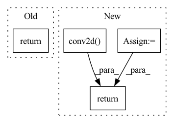

Pattern ID :35455

Before Change
]))
def forward(self, x):
return self.disc(x)
class Generator(nn.Module):
def __init__(self, channels_noise, channels_img, features_g):
After Change
self.tanh = nn.Tanh()
def forward(self, x):
batch_size = x.size(0)
x0 = self.lrelu(self.conv2d(x))
x3 = self.blocks(x0)
// Flatten
x3 = x3.view(batch_size, -1)
// Returning logits to determine whether the images are real or fake
x4 = self.linear1(x3)
// Recognition network for latent variables has an additional layer
encoder = self.lrelu(self.linear2(x3))
z_prediction = self.tanh(self.linear3(encoder))
return x4, z_prediction
def truncated_normal_initializer(weight, mean=0, std=0.02):
size = weight.shape
In pattern: SUPERPATTERN
Frequency: 5
Non-data size: 4
Instances
Fragment ID: 100643598
Project Name: ebartrum/lightning_gan_zoo
Commit Name: ada6e3d1398560a9cbcae15a4c5eb1425a2067e0
Time: 2021-03-31
Author: edward.bartrum@gmail.com
File Name: core/models/hologan_discriminator.py
M Class Name: Discriminator
N Class Name: Discriminator
M Method Name: forward(2)
N Method Name: forward(2)
M Parent Class: nn.Module
N Parent Class: nn.Module
M File Name: core/models/hologan_discriminator.py
N File Name: core/models/hologan_discriminator.py
M Start Line: 50
M End Line: 50
N Start Line: 57
N End Line: 70
'>
Before Change
return weights * scale - shift
def forward(self, x, eps=1e-4):
weights = self.standardized_weights(eps)
return super()._conv_forward(x, weights)
class SqueezeExcite(nn.Module):
def __init__(self, in_channels, out_channels, se_ratio=0.5):
After Change
return (self.weight - mean) * scale
def forward(self, x):
return F.conv2d(
input=x,
weight=self.standardized_weights(),
bias=self.bias,
stride=self.stride,
padding=self.padding,
dilation=self.dilation,
groups=self.groups
)
class SqueezeExcite(nn.Module):
def __init__(self, in_channels, out_channels, se_ratio=0.5):
super(SqueezeExcite, self).__init__()
'>
Fragment ID: 100643594
Project Name: benjs/nfnets_pytorch
Commit Name: 418101c197b12e698637507137b1fdcbde268d5d
Time: 2021-02-16
Author: benjs@benjs.de
File Name: model.py
M Class Name: WSConv2D
N Class Name: WSConv2D
M Method Name: forward(2)
N Method Name: forward(3)
M Parent Class: nn.Conv2d
N Parent Class: nn.Conv2d
M File Name: model.py
N File Name: model.py
M Start Line: 213
M End Line: 215
N Start Line: 214
N End Line: 222
'>
Before Change
def forward(self, x):
real, imag = x.unbind(dim = 1)
new_real = self.conv_real(real) - self.conv_imag(imag)
new_imag = self.conv_real(imag) + self.conv_imag(real)
return torch.stack((new_real, new_imag), dim = 1)
def complex_abs(t, dim = 1, eps = 1e-8):
real, imag = t.unbind(dim = 1)
After Change
def forward(self, x):
weight, bias = map(torch.view_as_complex, (self.weight, self.bias))
return F.conv2d(x, weight, bias, stride = self.stride, padding = self.padding)
def ComplexSTFTResidualUnit(chan_in, chan_out, strides):
kernel_sizes = tuple(map(lambda t: t + 2, strides))
paddings = tuple(map(lambda t: t // 2, kernel_sizes))
'>
Fragment ID: 100643593
Project Name: lucidrains/audiolm-pytorch
Commit Name: cb442af8bf09890219f2fa6bf7081042a65c2710
Time: 2023-02-07
Author: lucidrains@gmail.com
File Name: audiolm_pytorch/soundstream.py
M Class Name: ComplexConv2d
N Class Name: ComplexConv2d
M Method Name: forward(2)
N Method Name: forward(2)
M Parent Class: nn.Module
N Parent Class: nn.Module
M File Name: audiolm_pytorch/soundstream.py
N File Name: audiolm_pytorch/soundstream.py
M Start Line: 229
M End Line: 232
N Start Line: 151
N End Line: 152
'>
Before Change
exp_features.append(self.lambd_sp * sparse_feat + \
self.lambd_sm * smooth_feat + \
self.lambd_pe * persist_feat)
return torch.median(exp_features)
After Change
def cal_explanation_feature(self, saliency_maps: torch.Tensor) -> float:
sparse_feats = saliency_maps.flatten(start_dim=1).norm(p=1) // (N)
smooth_feats = self.conv2d(saliency_maps).flatten(start_dim=1).norm(p=1) // (N)
persist_feats = 0.0 // todo (N)
exp_feats = self.lambd_sp * sparse_feats + self.lambd_sm * smooth_feats + self.lambd_pe * persist_feats
return exp_feats.median()
'>
Fragment ID: 100643605
Project Name: ain-soph/trojanzoo
Commit Name: afe7bbd2d2e9f901ee8cf56c3b9320b9272a81af
Time: 2020-07-22
Author: ain-soph@live.com
File Name: trojanzoo/defense/backdoor/neuron_inspect.py
M Class Name: Neuron_Inspect
N Class Name: Neuron_Inspect
M Method Name: cal_explanation_feature(2)
N Method Name: cal_explanation_feature(2)
M Parent Class: Defense_Backdoor
N Parent Class: Defense_Backdoor
M File Name: trojanzoo/defense/backdoor/neuron_inspect.py
N File Name: trojanzoo/defense/backdoor/neuron_inspect.py
M Start Line: 68
M End Line: 84
N Start Line: 68
N End Line: 73
'>
Before Change
padding = self.padding
)
if self.use_bias:
conv = torch.add(conv, self.b * self.b_mask)
return conv
After Change
def forward(self, inputs):
if not self.use_bias:
return torch.nn.functional.conv2d(
inputs,
self.w * self.w_mask,
self.b * self.b_mask,
stride = self.strides,
padding = self.padding
)
else:
return torch.nn.functional.conv2d(
inputs,
self.w * self.w_mask,
'>
Fragment ID: 100643603
Project Name: beyond-ml-labs/beyondml
Commit Name: 9408cec7f3cf593fe6a1a99aaaccd6cd964a1810
Time: 2022-06-01
Author: 77127228+jacobrenn@users.noreply.github.com
File Name: mann/burning/layers/MaskedConv2D.py
M Class Name: MaskedConv2D
N Class Name: MaskedConv2D
M Method Name: forward(2)
N Method Name: forward(2)
M Parent Class: torch.nn.Module
N Parent Class: torch.nn.Module
M File Name: mann/burning/layers/MaskedConv2D.py
N File Name: mann/burning/layers/MaskedConv2D.py
M Start Line: 71
M End Line: 80
N Start Line: 71
N End Line: 85